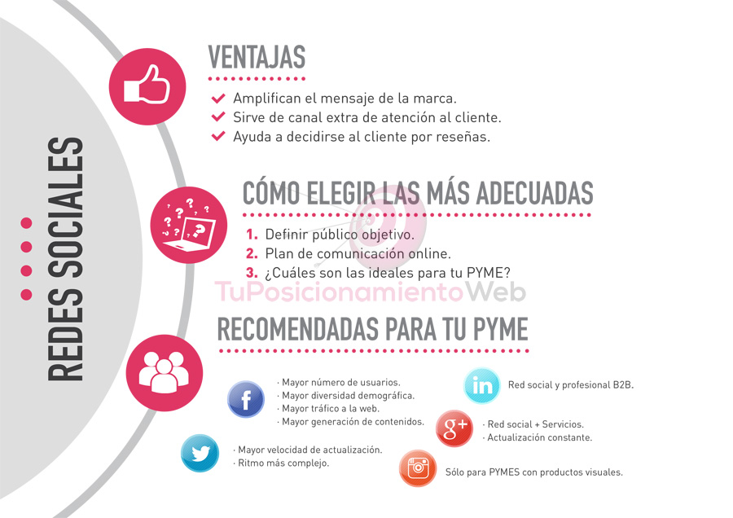
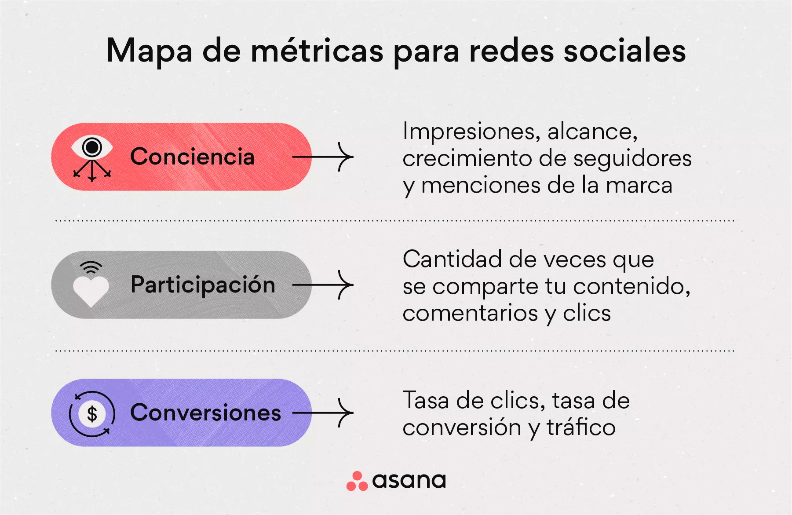

¿Qué son?
Las redes sociales como canales de ventas se refieren al uso de plataformas sociales (como Facebook, Instagram, TikTok, etc.) para promocionar, vender productos o servicios, y conectar directamente con clientes.
Ya no son solo medios de comunicación o entretenimiento: ahora también son herramientas comerciales donde ocurre la venta directa o se generan oportunidades de venta.
Términos clave
| Término | Definición |
|---|---|
| Social Selling | Técnica que consiste en usar redes sociales para identificar, conectar y relacionarse con posibles clientes. |
| E-commerce social | Venta de productos directamente dentro de redes sociales, sin salir de la plataforma. Ej: comprar en Instagram. |
| Marketplace social | Espacios dentro de redes donde los usuarios pueden publicar y vender productos. Ej: Facebook Marketplace. |
| Influencer Marketing | Promoción de productos a través de personas con gran cantidad de seguidores. |
| Contenido orgánico | Publicaciones no pagadas (fotos, historias, videos) para atraer clientes de forma natural. |
| Publicidad pagada | Anuncios segmentados que se muestran a usuarios específicos para aumentar ventas o tráfico. |
Beneficios de vender en redes sociales
- Alcance masivo: Millones de usuarios activos cada día.
- Segmentación precisa: Puedes mostrar tus productos solo a personas que probablemente comprarán.
- Interacción directa: Comunicación instantánea con tus clientes.
- Bajo costo inicial: Se puede comenzar sin invertir en una tienda online.
- Confianza social: Las opiniones, likes y comentarios influyen en las decisiones de compra.
- Contenido viral: Buen contenido puede alcanzar a miles o millones sin costo adicional.
Estrategias para vender en redes sociales
- Tener un perfil profesional y optimizado.
- Publicar contenido de valor (no solo vender, también educar o entretener).
- Usar hashtags y geolocalización.
- Responder comentarios y mensajes rápidamente.
- Hacer sorteos, lives o colaboraciones.
- Mostrar reseñas, opiniones o casos reales.
- Usar anuncios pagados con segmentación.
- Agregar enlaces a tu tienda online o WhatsApp.
Ejemplos prácticos

- Instagram: Tienda de ropa publica fotos con precios y enlaza a WhatsApp.
- Facebook: Emprendedor sube productos al Marketplace local.
- TikTok: Tienda de cosméticos crea videos con resultados reales.
- WhatsApp Business: Restaurante envía su menú por estados.
- Pinterest: Marca de decoración publica ideas con enlaces a su tienda.
Métricas importantes
- Alcance e impresiones.
- Clics en enlaces.
- Tasa de conversión.
- Interacciones (likes, comentarios, compartidos).
- Seguidores ganados.
- Ventas generadas desde publicaciones.
Recomendaciones finales
- Cuida la estética visual: las redes sociales son muy visuales.
- Publica constantemente.
- No solo vendas: crea comunidad.
- Escucha a tus clientes.
- Adapta tu estrategia según cada red.